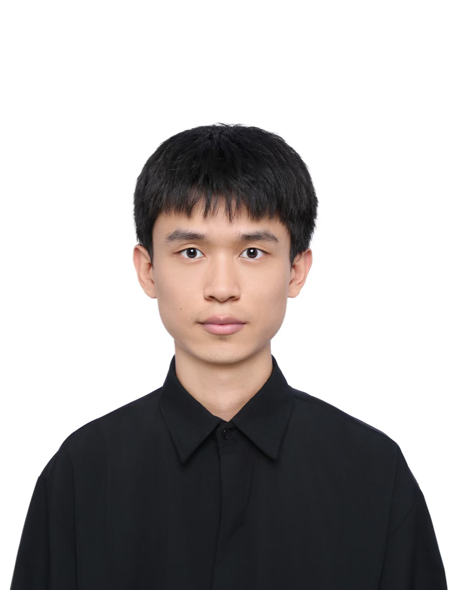

2026

Ubiquitous Computing · Mobile Sensing · Multimodal AI
Duo Zhang 张舵
Ph.D., School of Computer Science, Peking University
Incoming · September 2026Postdoctoral Researcher at ETH ZürichWorking with Prof. Dr. Michele Magno, Edge AI & Intelligent Sensing Lab ↗
I recently received my Ph.D. from the School of Computer Science at Peking University, advised by Prof. Daqing Zhang. In September 2026, I will join the Center for Project-Based Learning at ETH Zürich as a Postdoctoral Researcher, working with Prof. Dr. Michele Magno. I received my B.S. degree from the School of Computer Science at Northwestern Polytechnical University in 2021.
My research lies at the intersection of ubiquitous computing, mobile computing, and multimodal foundation models. My long-term goal is to bring foundation-model agents beyond the virtual world and into the physical environments where they can understand and assist people in everyday life. To do so, agents must perceive continuous human context: what people are doing, how their physical and physiological states evolve, and when support may be needed. I see sensing as the essential bridge connecting people, the physical world, and intelligent agents.
Toward this goal, I have pursued a systematic research agenda across the full mmWave sensing stack: foundational sensing infrastructure, including automatic radar extrinsic calibration, multipath mitigation, and sensing-coverage extension; mid-level human representations, including multi-person vital-sign monitoring, pose estimation, and behavior recognition; and high-level semantic understanding and reasoning with foundation models. Together, these layers provide the real-world perceptual foundation that intelligent agents need to assist people reliably, continuously, and with privacy.
mmWave sensingHuman behavior understandingMultimodal LLMsEdge AI & Intelligent SensingMobile computing
News
Recent updatesFour papers accepted at ACM UbiComp / IMWUT 2026.
One paper conditionally accepted at ACM MobiCom 2026.
One paper accepted at ACM UbiComp / IMWUT 2026.
One paper accepted at ACM MobiSys 2026.
One paper accepted at ACM SenSys 2026.
Two papers accepted at ACM UbiComp / IMWUT 2026.
One paper accepted at IEEE JSAC.
Publications
Selected and recent work · lead-author papers first2025
2025
2024
2024
2023
2026
OmniPC: A Generalizable Point Cloud Generation Pipeline for mmWave Radar
ACM SenSys
2025
WiCaliper: Simultaneous Material and 3D Size Sensing for Everyday Objects Using WiFi
IEEE JSAC
2025
WiCG: In-Body Cardiac Motion Sensing Based on a Mix-Medium Wi-Fi Fresnel Zone Model
IEEE TMC
2025
From Spatial Domain to Temporal Domain: Unleashing the Capability of CFAR for mmWave Point Cloud Generation
ACM IMWUT / UbiComp
2025
MmECare: Enabling Fine-grained Vital Sign Monitoring for Emergency Care with Handheld MmWave Radars
ACM IMWUT / UbiComp
2024
Waffle: A Waterproof mmWave-based Human Sensing System inside Bathrooms with Running Water
ACM IMWUT / UbiComp
Awards
Honors and recognition- 2026
Outstanding Doctoral Dissertation, School of Computer Science, PKU
- 2026
Outstanding Graduate of Peking University
- 2025
Ten Outstanding Academics, School of Computer Science, Peking University
- 2025
1st Place, SDP Sensing Challenge @ ACM MobiCom
- 2024
National Scholarship
Professional Service
Academic community- Reviewer, ACM UbiComp / IMWUT (2024–2026)
- Reviewer, IEEE Transactions on Mobile Computing (2025–2026)
- Reviewer, IEEE Transactions on Radar Systems (2026)
- Reviewer, IEEE Transactions on Automation Science and Engineering (2026)
- Reviewer, CCF Transactions on Pervasive Computing and Interaction (2026)
- Reviewer, ACM Transactions on Computing for Healthcare (2025)
- Artifacts Evaluation Committee, ACM MobiCom (2025)
- Reviewer, ACM CHI (2024)